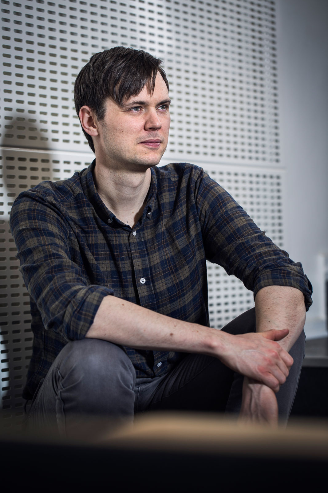

martin bisgaard
I am Associate Professor in the Department of Political Science at Aarhus University and current holder of a Research Project-2 grant (650.000 EUR) from the Independent Research Fund Denmark. I received my PhD degree in Political Science from Aarhus University and prior to entering the graduate program in Aarhus, I spent a year at the political science department at the University of California, San Diego.
My research lies at the intersection of political behavior, political psychology and political representation and it grapples with the electoral link between citizens and politicians. In my previous work, I have tried to understand how citizens' partisanship can impede their ability to hold politicians accountable and how much room politicians have in shaping public opinion. In my current work, I'm trying to understand what politicians believe about voter behavior.

Credits: Anders Trærup